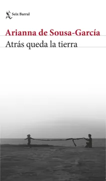

Atrás queda la tierra
Arianna de Sousa-García
De qué trata
Mientras su mundo se cae a pedazos, la narradora de Atrás queda la tierra conecta una serie de memorias, palabras e imágenes para escribir una conmovedora novela de no ficción sobre el dolor que provocan el despojo y la violencia. Esta es la historia de millones de venezolanos, pero también de todo quien haya tenido que sufrir el exilio. Atrás queda la tierra es el testimonio de la catástrofe de una nación que una madre le intenta contar a su hijo.
Por qué dialoga con Latinoamérica hoy
Exiliada en Chile desde 2016, la autora venezolana escribió una novela que en realidad es una carta de una madre a su hijo para explicarle la catástrofe de su nación y el sentimiento de no pertenecer a ninguna parte.
Esta novela ayuda a tener una postura crítica sobre los conflictos de Venezuela donde el fraude electoral es uno de los ejes, permitiendo visibilizar historias individuales y nombres propios en medio de un contexto donde la información suele volverse efímera o superficial en las redes sociales. Al documentar el desplazamiento y el dolor con un enfoque narrativo, se dignifica a quienes han sufrido el exilio.
Frente a la censura y el cierre de medios de comunicación, la literatura se convierte en un registro histórico y testimonial, permitiendo que la historia no se pierda y que las generaciones futuras tengan respuestas sobre lo que ha ocurrido en Venezuela durante las últimas décadas.
La autora enfatiza que, aunque el libro es una denuncia contra la situación en Venezuela, también es un llamado a la hermandad latinoamericana y a la solidaridad entre los países de acogida.